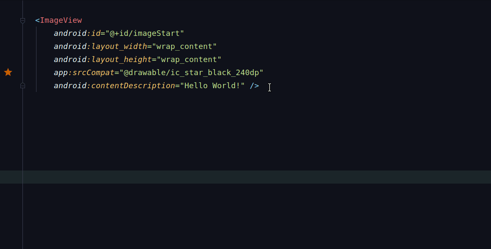
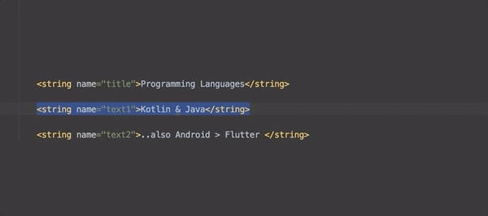

Cheatsheet about tips and tricks for Android Development
This is a simple set of tips and tricks regarding Android Development which I have gathered from various sources. It helps me direct other android devs in my community regarding stuff each android dev should know about. It is also there for me to keep track of anything I either learn on my own or from other sources now and then when browsing the internet.
Contributions are always welcome, hoping people will help me in growing this. To contribute, simply open up a PR with the changes.
Show some ♥️ and 🌟 the repo to support the project


Featured in


Also included in
Credits
This curated cheatsheet includes tips and tricks that I have been following in my workflow as well as those being suggested/followed by other android devs worldwide.I have tried to add direct links wherever I could remember, giving people due credit who have explained the concepts. If you think I have missed any, then either send a PR or open an issue and I will fix it asap.
If you appreciate my work, consider buying me a cup of ☕️ to keep me recharged 🤘🏼 [PayPal]

Code faster by using keyboard shortcuts
| Description | Mac | Linux/Win |
|---|---|---|
| Lookup IDE commands / Actions | Cmd Shift A | Ctrl Shift A |
| Open Class | Cmd O | Ctrl O |
| Open File | Cmd Shift O | Ctrl Shift N |
| Open recently edited file | Cmd Shift E | Ctrl Shift E |
| Open Symbol | Cmd Opt O | Alt Shift N |
| Open recently used file | Cmd E | Ctrl E |
| Last Edited Location | Cmd Shift Backspace | Ctrl Shift Backspace |
| Find Usage in persistent window | Opt F7 | Alt F7 |
| Find Usage in floating window | Cmd Opt F7 | Ctrl Alt F7 |
| Format the code with proper Indentation | Cmd Opt L | Ctrl Alt L |
| Surround With | Opt Cmd T | Alt Ctrl T |
| Open Terminal | Opt F12 | Alt F12 |
| Generate Setter/Getters | Cmd N | Alt Ins |
| Find Class | CMD O | Ctrl N |
| Refactor/Rename | Shift F6 | Shift F6 |
| Quick Fix | Opt Enter | Alt Enter |
| Goto Definition | Cmd B | Ctrl B |
| Show parameters for selected method | Cmd P | Ctrl P |
| Refactor This | Ctrl T | Ctrl Alt Shift T |
| Stop Process | Cmd F2 | Ctrl F2 |
| Search Everywhere | Shift Shift | Shift Shift |
| Select Methods to Override | Ctrl O | Ctrl O |
| Delete Line | Cmd Backspace | Ctrl Y |
| Duplicate Line | Cmd D | Ctrl D |
| Grow/Shrink selection from cursor | Opt Up/Down Arrow key | Shift Ctrl W |
| Multicursor Selection | Ctrl G | Alt J |
Complete Keymap Guide : Linux/Win | MacOSX
Other Tips/Tricks
-
Did you know you can quickly lookup the definition of any function by navigating to the function call and using
Opt + Spaceon macOS orAlt + Spaceon Win/Linux inside Android Studio🙀 [Ref Tweet]
-
Annoyed by the Design view always opening up when you open a layout or drawable xml file?🙄Navigate to Preferences ▶️Editor ▶️Layout Editor and choose "Code" option, to always open in Code view. [Ref Tweet]

-
If you want to use keyboard shortcuts with bookmarks, then make use of "Bookmark with Mnemonic". Once assigned a number, you can jump to the bookmark using
Ctrl + Number. [Ref Tweet]
-
When working with a class file dat has a lot of loc, often times one needs to jump between some parts of the same file. To do that, one can use the "Bookmarks" in Android Studio! Simply mark the line of code as Bookmark & open up the Bookmark Panel to jump. [Ref Tweet]

-
Bunch of quick tips about refactoring under this blogpost I wrote for raywenderlich.com
Use plugins to become more efficient
-
The plugin basically will annoy the hell out of you by showing you a big screen overlay with the key combination you should have used, if you used your mouse to execute some command to a level when you basically would start using the key combination just to avoid KeyPromoter annoying you all the time. It also has some useful features, like it will prompt you to create a key binding for a command whenever an action does not have a key binding and you have used it 3 times using your cursor. [ Old Version: KeyPromoter]
-
Provides actions for text manipulation such as Toggle case, encode/decode, sorting,
-
Add Sort Lines action in Edit menu to sort selected lines or whole file if the selection is empty.
-
Provides static byte code analysis to look for bugs in Java code from within Android Studio
-
The plugin that provides on-the-fly feedback to developers on new bugs and quality issues injected into Java, JavaScript and PHP code.
-
The plugin provides both real-time and on-demand scanning of Java files from within Android Studio.
-
The plugin that adds ADB commands to Android Studio and IntelliJ such as ADB Uninstall App, ADB Kill App, ADB Restart App, etc
-
The plugin which helps you find and implement the code you require in an instant.
-
The Dagger IntelliJ plugin creates visual connections between a @Inject object and the @Provides method that creates it.
-
This plugin extends the built-in JVM debugger with capabilities to explore objects in the JVM heap during a debug session.
-
Android Parcelable code generator
Plugin which generates Android Parcelable boilerplate code for you.
Speed code using code-completion
Use Live Templates in Android Studio
-
newInstance- Generates the staticnewInstancefunction inside a Fragment -
Toast- GeneratesToast.makeText(context, "", Toast.LENGTH_SHORT).show(); -
fbc- findViewById with cast -
const- Define a android style int constant -
logd- GeneratesLog.d(TAG, ""); -
logm- Log current method name and its arguments. -
logr- Log result of the current method -
logt- static logtaf with current classname -
psf- public static final -
sout- Prints a string to System.out -
soutm- Prints current class and method names to System.out -
soutp- Prints method parameter names and values to System.out -
visible- Set view visibility to VISIBLE -
gone- Set view visibility to GONE -
noInstance- private empty constructor to prohibit instance creation -
There is a quick way to surround your layout with a Linear Layout via using a Live Template. You can create one called
wrapllby setting it up [Ref Link]

...and use it as below

You can create more based on your usecase 😄
Comprehensive list of all Live Templates in Android Studio
Postfix code completion in Android Studio
Android Studio/IntelliJ havea special kind of code completion which allows you to write code specific to a field
-
<expr>.nullwill auto complete toif(<expr> == null) -
<expr>.notnullwill auto complete toif(<expr> != null) -
<expr>.varwill auto complete toT name = <expr> -
<expr>.fieldwill auto complete to create a global field variablefield = <expr> -
<ArrayExpr>.forwill auto complete tofor(T item : <Arrayexpr>) -
<ArrayExpr>.foriwill auto complete tofor(int i = 0; i < <Arrayexpr>.length; i++) -
<ArrayExpr>.forrwill auto complete tofor(int i = <Arrayexpr>.length - 1; i > 0 ; i--)
Complete list of available postfix code completion can be found via navigating inside Android Studio/IntelliJ menu:
Settings → Editor → Postfix Templates
Configuring Android Studio
Use the Darcula Theme in Android Studio
Ok, I know its more like a preference, but trust me using that keeps your eyes less strained as they would be if you used the Default Light theme.
Don't use a small font
Preferably use a font in Android Studio that's easy to read and is at a font size which does not forces you to strain your eyes. Also using fonts that support lingature increases readeablity. While everyone has a preferred font, below are some options for interested folks:
Use a code style
You should use a standard codestyle, so possible contenders can be
Misc tips
-
Use the Memory/Network/CPU Monitor inside Android Studio to profile your code/app
ADB Shell
Few handy commands you can use to interact with emulator/device, through terminal.
| Description | Command |
|---|---|
| List all connected devices | adb devices |
| Install an application on device -s to install on the SD Card -g to grant all permissions listed in the manifest [More Info] | adb install -r ~/application.apk |
| Uninstall an application | adb uninstall your.app.package |
| Download a file from device | adb pull /sdcard/file.ext |
| Upload a file to a device | adb push file.ext /sdcard |
| Print all installed packages on device | adb shell pm list packages -f |
| Clear Application data | adb shell pm clear your.app.package |
| Toggle Data for device | adb shell svc data disable |
| Toggle Wifi for device | adb shell svc wifi enable |
| Location of Device - High accuracy: gps,wifi,network or gps,network (if you want the wifi) - Battery saving: wifi,network or network only - Device only: gps | adb shell settings put secure location_providers_allowed gps |
| Reset all granted permissions | adb shell pm reset-permissions -p your.app.package |
| Reset a specific permission | adb shell pm revoke your.app.package android.permission.WRITE_EXTERNAL_STORAGE |
| Broadcast Actions | adb shell am broadcast -a 'my_action' |
| Simulating Android killing your app in the background | adb shell am kill |
| Take a Screenshot | adb shell screencap -p \| perl -pe 's/\x0D\x0A/\x0A/g' > screenshot.png |
| Launch an installed app using its package name | adb shell monkey -p com.yourapp.packagename 1 |
| Stress test your app using its package name by sending a pseudo-random stream of user events into the system | adb shell monkey -p com.yourapp.packagename -v 500 |
Setup ADB Aliases
Append the below Aliases to your ~/.bashrc or ~/.zshrc file, save and restart the terminal. Once saved, use them as show in Usage column
#############################################################
# Android aliases + path
#############################################################
# Path to Android SDK (This is for Mac, replace for your OS)
export ANDROID_HOME=$HOME/Library/Android/sdk
# Path to NDK
export ANDROID_NDK_HOME=$ANDROID_HOME/ndk
# Path to Android platform tools (adb, fastboot, etc)
export ANDROID_PLATFORM_TOOLS="$ANDROID_HOME/platform-tools"
# Path to Android tools (monitor, mksdcard, emulator-check, emulator, etc)
export ANDROID_TOOLS_1="$ANDROID_HOME/tools"
# Path to Android tools (apkanalyzer, avdmanager, monkeyrunner, lint, sdkmanager etc)
export ANDROID_TOOLS_2="$ANDROID_HOME/tools/bin"
# Path to Android tools (aapt, apksigner, zipalign, etc)
export ANDROID_TOOLS_3="$ANDROID_HOME/build-tools/29.0.3/"
# Add all to the path
export PATH="$PATH:$ANDROID_PLATFORM_TOOLS:$ANDROID_TOOLS:$ANDROID_TOOLS_2:$ANDROID_TOOLS_3"
# Demo Mode : https://android.googlesource.com/platform/frameworks/base/+/master/packages/SystemUI/docs/demo_mode.md
# Enable Demo Mode on your device
# Usage: enableDemoMode
alias enableDemoMode="adb shell settings put global sysui_demo_allowed 1 && adb shell am broadcast -a com.android.systemui.demo -e command clock -e hhmm 1200 && adb shell am broadcast -a com.android.systemui.demo -e command network -e mobile show -e level 4 -e datatype false && adb shell am broadcast -a com.android.systemui.demo -e command notifications -e visible false && adb shell am broadcast -a com.android.systemui.demo -e command battery -e plugged false -e level 100"
# Disable Demo Mode on your device
# Usage: disableDemoMode
alias disableDemoMode="adb shell am broadcast -a com.android.systemui.demo -e command exit"
# Install and Grant all permissions for an apk
# Usage: grantAllPermissionsForApk path/to/apk/Application.apk
alias grantAllPermissionsForApk="adb install -g $1"
# Take a screenshot
# Usage: screenshot
alias screenshot="adb exec-out screencap -p > screen-$(date -j "+%s").png"
# Fire an intent
# Usage: startintent https://twitter.com/nisrulz
alias startintent="adb devices | tail -n +2 | cut -sf 1 | xargs -I X adb -s X shell am start $1"
# Install Apk
# Usage: apkinstall ~/path/to/apk/App.apk
alias apkinstall="adb devices | tail -n +2 | cut -sf 1 | xargs -I X adb -s X install -r $1"
# Uninstall an app
# Usage: rmapp com.example.demoapp
alias rmapp="adb devices | tail -n +2 | cut -sf 1 | xargs -I X adb -s X uninstall $1"
# Clear all data of an app
# Usage: clearapp com.example.demoapp
alias clearapp="adb devices | tail -n +2 | cut -sf 1 | xargs -I X adb -s X shell pm clear $1"
# Get package name of the passed apk file
# Usage: getPackageName app-debug.apk
alias getPackageName="apkanalyzer -h manifest application-id $1"
# Stress test the debug apk with 100000 ui events
# Execute at the root of your android project
# Use as: stressTestDebugApk apk_file.apk
function stressTestApk() {
local APP_PACKAGE_NAME=$(getPackageName $1)
adb shell monkey -p $APP_PACKAGE_NAME 100000
}
# Install APK to device
# Use as: apkinstall app-debug.apk
alias apkinstall="adb devices | tail -n +2 | cut -sf 1 | xargs -I X adb -s X install -r $1"
# As an alternative to apkinstall, you can also do just ./gradlew installDebug
# Alias for building and installing the apk to connected device
# Use as: buildAndInstallApk path/to/apk_file.apk
# Example: To build and install debug apk
# > buildAndInstallApk ./app/build/outputs/apk/debug/app-debug.apk
alias buildAndInstallApk="./gradlew assembleDebug && apkinstall $1"
# Launch your apk on your connected device
# Execute at the root of your android project
# Usage: launchApk path/to/apk_file.apk
# Example: To launch debug apk
# > launchApk ./app/build/outputs/apk/debug/app-debug.apk
alias launchApk="adb shell monkey -p $(getPackageName $1) 1"
# ------------- Single command to build+install+launch apk------------#
# Execute at the root of your android project
# Use as: buildInstallLaunchApk path/to/apk_file.apk
# Example: To build, install and launch debug apk
# > buildInstallLaunchApk ./app/build/outputs/apk/debug/app-debug.apk
alias buildInstallLaunchApk="buildAndInstallApk $1 && launchDebugApk $1"
scrcpy
It is basically used to display and control your Android device and is the open source equivalent of Vysor. The good folks at Genymotion built this tool and then open sourced it (Open Source FTW).
Working with gradle wrapper
-
To force re-download of dependencies
./gradlew --refresh-dependencies -
To exclude a certain task from being run by gradle
Suppose you want to exclude the task
javaDocthen use-xoption followed by the task name, i.ejavaDocin this case../gradlew clean build -x javaDoc -
Stop a running gradle build process
./gradlew -stop -
Upgrade gradle wrapper to latest release version i.e 6.5
Run this inside your project folder via terminal
./gradlew wrapper --gradle-version 6.5 --distribution-type all -
Make use of Build Cache to speed up your builds.
Set the below property in your global
gradle.propertiesfileandroid.enableBuildCache=true -
Make your builds faster by building offline [Ref Link]
The
--offlineflag tells gradle to always use dependency modules from the cache, regardless if they are due to be checked again. When running offline, gradle will never attempt to access the network to perform dependency resolution. If required modules are not present in the dependency cache, build execution will fail.-
Assembling develop debug at full speed:
./gradlew assembleDevelopDebug --offline -
Running your unit tests at full speed:
./gradlew test --offline
-
-
Run a single unit test from the command line using the
--testsoption e.g:./gradlew testDebugUnitTest --tests "*.MainPresenterTest". Use*to avoid typing the entire package name. [Ref Link]
Gradle: Groovy Script Tricks
-
Use proguard
android { ... buildTypes { release { minifyEnabled true proguardFiles getDefaultProguardFile('proguard-android.txt'), 'proguard-rules.pro' } } } -
Use shrinkResources
android { ... buildTypes { release { shrinkResources true minifyEnabled true ... } } } -
Split your apk using gradle when using Native code, do not bundle all of em together and ship!.. coz that will make you evil
defaultConfig { ... ndk { abiFilters "armeabi", "armeabi-v7a", "mips", "x86" } } //Split into platform dependent APK splits { abi { enable true reset() include 'armeabi', 'armeabi-v7a', 'mips', 'x86' //select ABIs to build APKs for universalApk false //generate an additional APK that contains all the ABIs } } // map for the version code project.ext.versionCodes = ['armeabi': 1, 'armeabi-v7a': 2, 'mips': 5, 'x86': 8] // Rename with proper versioning android.applicationVariants.all { variant -> // assign different version code for each output variant.outputs.each { output -> output.versionCodeOverride = project.ext.versionCodes.get(output.getFilter(com.android.build.OutputFile.ABI), 0) * 1000000 + android.defaultConfig.versionCode } } -
To have the each subproject script name match that of the project name
Then add this line in settings.gradle
rootProject.children.each{ it.buildFileName = it.name + '.gradle' } -
Use different package name for non-release builds
android { buildTypes { debug { applicationIdSuffix '.debug' versionNameSuffix '-DEBUG' } release { // ... } } } -
Setup Android Studio to fail build if code contains
//STOPSHIP[Ref Link]To enable the
//STOPSHIPlint check, in yourbuild.gradleandroid { ... lintOptions { abortOnError true fatal 'StopShip' } }If you have a
//STOPSHIPcomment in your code, this will cause an error to be thrown when a release apk is generated.You can turn on //STOPSHIP highlighting in Android Studio (isn't enabled by default) in
Preferences>Editor>Code Style>Inspections.Search for STOPSHIP to find the correct setting.
-
Output unit tests directly to the console [Ref Link]
A small neat trick to see Android unit tests logging results as they happen in the terminal.
android { ... testOptions.unitTests.all { testLogging { events 'passed', 'skipped', 'failed', 'standardOut', 'standardError' outputs.upToDateWhen { false } showStandardStreams = true } } } -
Define a variable at build time In your
build.gradleandroid{ defaultConfig { ... buildConfigField "String", "SERVER_ENDPOINT", '"http://www.myendpoint.com"' buildConfigField "int", "FOO", "52" buildConfigField "boolean", "LOG", "false" ... } }and then use it in code as
BuildConfig.SERVER_ENDPOINT,BuildConfig.FOO,BuildConfig.LOG -
Calculate the version code and version name in your
build.gradlemanually, based of version values In your app'sbuild.gradleversionMajor = 0 versionMinor = 0 versionPatch = 0 versionBuild = 1 verCode = versionMajor _ 1000000 + versionMinor _ 10000 + versionPatch \* 100 + versionBuild verName = "${versionMajor}.${versionMinor}.${versionPatch}" // Use android{ defaultConfig { ... versionCode verCode versionName verName ... } }
-
Calculate the version code and version name in your
build.gradleautomatically, based on git informationNote: These functions go specifically inside the app's
build.gradleand cannot be used withext.In your app's
build.gradle// Version code is calculated as the number of commits from last commit on master def getVersionCode = { -> try { def code = new ByteArrayOutputStream() exec { commandLine 'git', 'rev-list', 'HEAD', '--count' standardOutput = code } return Integer.parseInt(code.toString().trim()) } catch (exception) { return "1"; } } // Version name is Last Tag Name + No. of commits form last Tag + short git sha def getVersionName = { -> try { def stdout = new ByteArrayOutputStream() exec { commandLine 'git', 'describe', '--tags', '--dirty' standardOutput = stdout } return stdout.toString().trim() } catch (exception) { return "0.0.0.1"; } } // Use android{ defaultConfig { ... versionCode getVersionCode() versionName getVersionName() ... } }
-
Get the date of build as a variable In your app's
build.gradle// Get the date of build def getDateOfBuild = { -> // ISO 8601 time format return new Date().format("yyyy-MM-dd'T'HH:mm'Z'").toString().trim() } // then use it as a variable in BuildConfig android{ defaultConfig { ... buildConfigField "String", "DATE_OF_BUILD", "\"${getDateOfBuild()}\"" } } -
Get the Git SHA as a variable In your app's
build.gradle// Get the last Git Short Hash def getGitHash = { -> def stdout = new ByteArrayOutputStream() exec { commandLine 'git', 'rev-parse', '--short', 'HEAD' standardOutput = stdout } return stdout.toString().trim() } // then use it as a variable in BuildConfig android{ defaultConfig { ... buildConfigField "String", "GIT_SHA", "\"${getGitHash()}\"" } }Have a look at the Paperwork Project, which generates build info for your Android project without breaking incremental compilation
-
Use Java 8 features by adding
sourceCompatibility&targetCompatibilityto your build.gradle fileandroid { ... compileOptions { sourceCompatibility JavaVersion.VERSION_1_8 targetCompatibility JavaVersion.VERSION_1_8 } } -
Setup a gradle task to archive apks and proguard files on build, for backup purposes
task deployApks(type:Copy) { description = "Copies APKs and Proguard mappings to the deploy directory" def appName = "<app_name>"; def versionDir = android.defaultConfig.versionName+"_"+android.defaultConfig.versionCode; println("Copies APK and Proguard to " + versionDir) from 'build/outputs/mapping/release/' include '**/mapping.txt' into '../.admin/deploy/' + versionDir rename ('mapping.txt', "${versionDir}-mapping.txt") from ('.') { exclude '**/build', '**/src' } include '*.apk' into '../.admin/deploy/' + versionDir rename ('app-release.apk', "${appName}-${versionDir}.apk") } -
Reference local
aarfiles as below [Stackoverflow Ref]dependencies { implementation(name:'nameOfYourAARFileWithoutExtension', ext:'aar') } repositories { flatDir { dirs 'libs' } } -
Get faster gradle builds by only using one resource configuration for your development builds [Ref Link]
android { ... productFlavors { dev { ... // The following configuration limits the "dev" flavor to using // English stringresources and xxhdpi screen-density resources. resConfigs "en", "xxhdpi" } ... } } -
Specifying
buildToolsVersionin your build.gradle files is optional when using Android plugin 3.0.0 or later. By default the plugin uses the minimum version of the build tools required by the version of the plugin you're using. [Tweet Link, Ref Link]
-
You can insert variables into AndroidManifest defined in
build.gradle[Tweet Link, Ref Link]
-
Make use of custom gradle tasks in your build.gradle files
Android uses Gradle as its build system, which actually allows one to make a lot of things easy by creating tasks to automate things. This reddit post enlists a lot of such useful gradle scripts
Gradle: Kotlin Script Tricks
Work in Progress
Make better choices while coding
-
Use OkHttp over HttpUrlConnect
HttpUrlConnect suffers from quite some bugs. Okhttp solves them in a more elegant manner. [Reference Link]
-
Use Pidcat for a better log reading experience
-
Use some Version Control System(VCS) like Git
-
Use ClassyShark
It is a standalone tool for Android Devs used to browse any Android executable and show important info such as class interfaces and members, dex counts and dependencies
-
Use Stetho
Debug your android apps using Chrome Dev Tools. Includes tools like Network Monitor, Shared Preference explorer etc.
-
A tool to analyze battery consumers using Android "bugreport" files.
-
Always use a constant version value like "1.2.0"
Avoid using
+when specifying the version of dependencies.- Keeps one secured from unexpected API changes in the dependency.
- Avoids doing an extra network call for the checking latest version of each dependency on every build.
-
Do not use your own personal email for Google Play Developer Account
-
Use Vectors instead of PNG
If you do have to use png, compress them. Take a look at TinyPNG.
-
Learn about some architecture such as MVP or Clean
-
Try to understand and follow TDD (Test Driven Development)
-
Follow the DRY principle DRY = Do not Repeat Yourself
-
Learn about Dependency Resolution
With the speed android dependencies update, sooner or later you are going to encounter some sort of dependency conflict. The solution is making use of Dependency Resolution. Official Reference
-
Use a proper .gitignore in your Android Projects, Check it here
-
Use LeakCanary to detect memory leaks in your app - Its a memory leak detection library for Android and Java.
-
Enable gradle to automatically download missing platforms in android sdk
Set the below property in your global
gradle.propertiesfileandroid.builder.sdkDownload=trueThis is an experimental option and it only downloads build tools and platforms, but doesn't actually update Google or Support repository [Bug Ref]
-
Donot include both
jcenter()&mavenCentral()in yourbuild.gradlefileJCenter is a superset of MavenCentral. [Ref tweet]
-
Clear your gradle cache if you think that bundled support and google play services lib in android sdk are inconsistent
- Goto
~/.gradle/caches/and delete everything inside thecachefolder. - Open SDK Manager and resync all support libs and google play services
- Next re-sync your project
- Everything should become consistent and functional.
- Goto
-
Use
alfito find the gradle dependency statement for a libraryIts basically the command line version of Gradle, Please which is a web hosted.
-
Run
alfi name_of_library -
Copy the desired library
-
Paste in your build.gradle
-
-
Use
dryrunto test a library directly-
Just Run
dryrun REMOTE_GIT_URL
-
-
Use an abtracted Logger class
-
If you want to automatically initialize your library, use a Content Provider [Read how Firebase does it - Ref Link]
-
Reduce installed app size with
"android:extractNativeLibs:false"in<application>[Ref Link]This will essentially prevent the system from creating a second copy of the .so files and fix the System.loadLibrary call so it’s able to find and open native libs straight from the APK, no code changes on your part required.
-
Selectivily execute a specific method in Android Studio [Ref Link]

-
Did you get one of these Google Play Developer Policy Violation Emails? Worry not, generate a Privacy Policy for your android app [Ref ink]
- Take a look at App Privacy Policy Generator, a web app to generate a generic privacy policy for your app.
-
Activity LifeCycle [Ref Link]

-
Tip about
onSaveInstanceState()
onSaveInstanceState()is called only when the OS decides to kill theActivityinstance. It will not be called when Activity is explicitly killed i.e User pressed back button orfinish()is called from code. -
If you are into building Android Libraries, then read here for more tips
-
Input some text in an editfield in a running emulator from your keyboard
adb shell input text "keyboard text" -
Use
areNotificationsEnabled()fromNotificationManagerCompatto detect whether your users blocked your Notifications [Ref Link] -
Don't hard-code encryption keys, a simple grep for
"Ljavax/crypto"reveals them in bytecode [Ref Link] -
Intents have a limited payload size (1Mb), don't serialize and attach entire file to it [Ref Link]
-
Always copy a file before sending it as intent URI. Receiving app could edit it & send a canceled result [Ref Link]
-
Use
http://as scheme for app deeplinks, they are more universal & when app not installed drive users to a domain you own [Ref Link] -
Use below to display your app launch time [Ref Link]
adb shell am start -W <packagename>/. <activityname> -
Use activity-alias or your launcher icons will disappear when renaming/moving your MainActivity
-
To enable
aapt2set below in gradle propertiesandroid.enableaapt2=true -
To testout doze mode, trigger it using
adb[Ref Linkadb shell dumpsys deviceidle force-idle -
Thumb rule regarding setting
compileSdkVersion,minSdkVersionandtargetSdkVersionminSdkVersion(lowest possible) <=targetSdkVersion==compileSdkVersion(latest SDK)
-
Google released an option to include OSS license activity in your app, use that to attribute credits to the OSS libs in your app [Ref Link]
-
Make Android Studio render
<merge>layouts correctly by specifying the layout type with the tools:parentTag attribute [Ref Link]
-
Checkout the Background Execution Limits on Android Oreo and update your app to work with the restrictions [Ref Link]
-
To take good screenshots with clean status bar use the Demo Mode in Android [Ref Link]
-
Steps
-
Enable Demo Mode
adb shell settings put global sysui_demo_allowed 1 -
Enable/disable icons by running the right command
// display time 12:00 adb shell am broadcast -a com.android.systemui.demo -e command clock -e hhmm 1200 // Display full mobile data without type adb shell am broadcast -a com.android.systemui.demo -e command network -e mobile show -e level 4 -e datatype false // Hide notifications adb shell am broadcast -a com.android.systemui.demo -e command notifications -e visible false // Show full battery but not in charging state adb shell am broadcast -a com.android.systemui.demo -e command battery -e plugged false -e level 100 -
Run app and take screenshots
-
Exit demo mode once you are done
adb shell am broadcast -a com.android.systemui.demo -e command exit
-
-
-
To record video of your android device [Ref Link]
adb shell && screenrecord /sdcard/download/fileName.mp4Hit
Ctrl+Cto exit/stop recordingRecorded video file is saved at the location mentioned in the command on the device itself.
-
Use Dao inheritance to reduce the amount of boilerplate code [Ref Link]
-
Instead of using
getActivity()in fragment, keep a habit of getting context fromonAttach(). [Ref Link] -
Avoid setting a background in every view/fragment as it likely causes overdraw. [Ref Link]
-
View.getWidth() = 0?That's because your view hasn't been layout yet, use globallayoutListener to know layout done. [Ref Link] -
Android never kills activities, it only kills processes. When low memory the lowest priority ranked will be killed.[Ref Link]
-
Use
-whyareyoukeeping class com.jeroenmols.MyClassto figure out why certain a class wasn't removed.[Ref Link] -
Use certificate pinning to resist impersonation by attackers using mis-issued or otherwise fraudulent certificates, when making requests from your app. [Ref Link]
-
Do download the latest emulator using CLI
cd <android_sdk>/tools/bin ./sdkmanager --channel=3 emulatorTo check the version of emulator, use
./sdkmanager --channel=3 emulator -
Cleanup your Gradle caches by deleting files not accessed within the last month [Ref Link]
find ~/.gradle -type f -atime +30 -delete find ~/.gradle -type d -mindepth 1 -empty -deleteTo check the size of your gradle cache, run:
du -sh ~/.gradle -
Remove all debug log statements from the release build using the below proguard rules. (app's build.gradle should have
minifyEnabled trueset for this to work)# Remove all debug logs -assumenosideeffects class android.util.Log { public static *** d(...); }The above snippet is usually appended to contents of app/proguard-rules.pro file
-
Should I use Enums in Android?
tl;dr
-
If you need code to be very performant integer constants may be the way to go
public class Operator { public static final int ADD = 1; public static final int SUBTRACT = 2; public static final int MULTIPLY = 3; public static final int DIVIDE = 4; } -
Use Enums because
- Are type-safe, so you can only use valid enum types
- Provide better code readability
- Can implement interfaces
- Support polymorphic behavior
- In some really trivial cases, Proguard can optimize Enums into integer constants for you [Ref Link]
- Performance difference rarely makes a difference.
public enum Operators { Add, Subtract, Multiply, Divide }
-
-
The string resource
android.R.string.yesdoesnot yield string "Yes" instead it yields "Ok". Similarly the string resourceandroid.R.string.nodoesnot yield string "No" instead it yields "Cancel" [Ref Link]
-
Don’t want generated files in your AS search results? Go to
Preferences -> File Types -> Ignore files and foldersand add the pattern to ignore - e.g.*.dex;*.class;[Ref Link] -
If you uncheck “Suspend” and check “Evaluate and Log” in breakpoint menu, the breakpoint will print evaluated statement into the uncluttered “Console” window. No need for recompile due to added Log.d statements anymore [Ref Link]

-
To measure how long a method took to execute, you can use
TimingLoggerclass. [Ref Link]- Typical Usage
TimingLogger timings = new TimingLogger(TAG, "methodA"); // ... do some work A ... timings.addSplit("work A"); // ... do some work B ... timings.addSplit("work B"); // ... do some work C ... timings.addSplit("work C"); timings.dumpToLog(); - Output
D/TAG ( 3459): methodA: begin D/TAG ( 3459): methodA: 9 ms, work A D/TAG ( 3459): methodA: 1 ms, work B D/TAG ( 3459): methodA: 6 ms, work C D/TAG ( 3459): methodA: end, 16 ms
- Typical Usage
-
If you're working with Android Things and you don't have an extrenal screen for your device, install scrcpy and use it to see what's going on your Android IoT device. It works a charm over wireless adb. [Ref Link]
-
Android Studio has this weird behaviour that it allows to edit its default code style, which leads to a weird side-effect. If you open your pre-setup project(with set codestyle and copyright configs) in Android Studio it will delete all pre-setup codestyle and copyright profile in this project. This is every much evident if you checked in your configs into git for sharing purpose, which is lost immediately as soon as you open the project
deleted: .idea/codeStyles/Project.xml deleted: .idea/codeStyles/codeStyleConfig.xml deleted: .idea/copyright/profiles_settings.xml deleted: .idea/copyright/copyright.xmlTo fix that please follow along as below: [All thanks to Said Tahsin Dane for the solution]
-
We first need to verify that your
Defaultcodestyle isn't modified. To check that please open Android Studio with any project except your pre-setup(with set codestyle and copyright configs) project. Then navigate toPreferences>Edior>Codestyleand check if your code scheme hasDefaultin BLUE color (this means it is modified).
-
However if it is not colored BLUE, you are good and you can go ahead to open your pre-setup(with set codestyle and copyright configs) project and everything should be pre-setup for you.
-
If it is modified (colored BLUE), then click on the cog icon and select
Restore Default
-
After you hit that option, simply accept the change

-
Once done, you will see your Default is no more colored BLUE or modified, which means you are good

-
Now simply go ahead and open your pre-setup(with set codestyle and copyright configs) project and everything should be pre-setup for you.
-
-
If you add
android:sharedUserIdto an already published app, the app data will be cleared for all users that install your upgrade (because Android changes the process). So if you ever intend to use it, you must add it before publishing your app [Ref Link] -
When opening up methods for testing, use otherwise to still hide it from code complete.[Tweet Link, Ref Link]

-
You can group your recent Android Studio projects, and add icons to them [Ref Link]

-
Only build a single configuration to speed up debug builds. [Ref Link]

-
Avoid the annoying jump to Design tab while editing XML. Prefer XML editor under Settings [Ref Link]

-
Reduce installed app size with
android:extractNativeLibs="false"in[Tweet Link, Ref Link] 
-
Improve Android Studio code inspections with Thread annotations [Tweet Link, Ref Link]

-
Use
adbto put a phone into doze mode for testing [Tweet Link, Ref Link]
-
Use
areNotificationsEnabled()fromNotificationManagerCompatto detect whether your users blocked your Notifications [Tweet Link, Ref Link]
-
Activity.runOnUiThreadis just a convenient wrapper ofHandler.post; don't pass aroundActivityjust so you can use it. [Ref Link] -
Define your interfaces with the highest possible option that will suffice. Don't use an
Activitywhen a Context will do. [Ref Link] -
If you're not building a replacement for the dialer, use
ACTION_DIALnotACTION_CALLto initiate a call. [Ref Link] -
Requesting updates from a system service may drain battery, so register for updates in onResume and unregister in onPause. [Ref Link]
-
Hierarchy Viewer won’t run on prod devices, if however u want to run it then follow below steps [Tweet Link, Ref Link]

-
Variable and
initblock declaration order in Kotlin, actually matters :) if you want to use a variable inside init {} initialize it before it. -
When comparing intents it does not compare any extra data included in the intents [Tweet Link, Ref Link]
-
To show a ringtone picker to the user, use the
ACTION_RINGTONE_PICKERintent to launch the picker as a subactivity. [Ref Link] -
Want to remove focusState on an item in GridView? Try:
android:listSelector="#00000000"[Ref Link] -
You can generate the proguard keep rules via the APK Analyzer inside Android Studio. [Ref Link]

-
When viewing an Android Manifest, there is a tab at the bottom that allows you to see the merged manifest. Use this to inspect the merged manifest and find conflicts. [Ref Link]

-
In the APK analyzer in Android Studio, classes/members listed in italic are only references, not definitions. If it's in italics, it's defined in another DEX file (or the SDK). [Ref Link]

-
To be able to write multiline Todo comments, simply indent by 1 tab from second line onwards. [Ref Link]

-
You can get rid of a lot of noise in the Logcat, by Right Clicking a selected text > "Fold lines like this" option!. [Ref Link]

-
You know how you can group ur code inside IDEs such as Android Studio and IntelliJ IDEA by using the
regionandendregioncomment blocks. Turns out you can use the same trick to group inside XML files such as for layout, strings, styles, colors xml files [Ref Tweet]
-
How many of you have had issue with special characters (&,<, >, etc) in your strings.xml file? Did you know there is an action called "Encode XML/HTML Special Characters" inside Android Studio that can escape those characters for you! [Ref Tweet]

-
The option is also avaliable under Edit menu drop down

-
In case the issue is in just one line, you can also just
ALT+ENTERto get contextual fix.
-
Tips regarding UI/UX
-
Motion
- Material Design uses real-world metaphors as its foundation. Objects in the real world don't move linearly, they move in curved paths and accelerate and decelerate according to the motion's properties.
- As such, motion should also use such properties and animate objects so that the motion feels natural rather than forced
- For example, a car leaving the screen in a movie starts off slowly, then accelerates till it's out of the frame. Similarly, views should be interpolated using classes like AccelerateInterpolator, FastOutSlowInInterpolator, etc. [More Info]
- When changing the visibilities of views, if you add
android:animateLayoutChanges="true"to the parent, you get a nice little animation for free. [Ref Link]
-
Typography
- While custom typefaces can be used for branding, it is essential to stick to Roboto and Noto if possible, especially for body text, due to their clarity and optimistic nature.
- Roboto covers Latin, Greek and Cyrillic extended scripts, with Noto filling in for other language scripts [More Info]
- Weight balancing is an important aspect of typography, the fundamental concept of which is that the larger a typeface is, the less its weight should be so that it doesn't appear too thick and balances its weight with smaller typefaces of higher weights
- Typography should align to a 4dp baseline grid, and maintain a minimum contrast ratio of 4.5:1 based on luminance values, with a recommended ratio being 7:1.
- The ideal reading length for large blocks of text is 40 to 60 characters per line. Anything less is too narrow and anything more is too wide.
-
Icons
- Icons should be designed at 48dp, with 1dp edges, which equates to
- 48px by 48px at mdpi
- 72px by 72px at hdpi
- 96px by 96px at xhdpi
- 144px by 144px at xxhdpi
- 192px by 192px at xxxhdpi
- An additional icon of 512px by 512px should be designed for use on Google Play
- Material icons, in addition to the base icon, should contain the following important elements
- 1dp tinted edge at the top
- 1dp shaded edge at the bottom
- Contact shadow - a soft shadow around all edges of raised elements
- Finish - a soft tint to provide surface lighting, fading from upper life to lower right [More Info]
- Icons should be designed at 48dp, with 1dp edges, which equates to
-
Ripples
-
When implementing Ripple Effect use
?attr/selectableItemBackgroundinstead of?android:attr(Ref) -
When implementing Ripples contained within the view like Button, use (Ref)
android:background="?attr/selectableItemBackground" -
When implementing Ripples that extend beyond the view's bounds like ImageView: (Ref)
?attr/selectableItemBackgroundBorderless
-
- Other Points to Note
- Views should be aligned to Material Design's 8dp baseline grid and the keylines when possible. This gives the UI a sense of structure and hierarchy. [More Info]
- If you plan on keeping a reference to any ViewGroup (LinearLayout, FrameLayout, RelativeLayout, etc.), and you don’t want to use any methods specific to this particular type of Layout, keep it as a ViewGroup object. [More Info]
- While picking an accent color (if the brand already has one), pick a color complementary to the primary color so that the contrast is high enough
Tips if you use Kotlin
-
Checkout From Java to Kotlin
Cheatsheet when you come from Java to Kotlin. Very nice resource to compare the two languages.
-
Checkout Kotlin Style Guide by Google
Podcasts to listen
There are others too, but the above two are the popular ones, you can lookup more using tag android on sites offering Podcast Services.
P.S : I use Player.fm to listen to these podcasts. They even have an Android Client, all for FREE.
Learning Resources
-
Checkout Android Dialogs Short byte sized android interview videos with experts.
-
Checkout Google's Udacity Android courses
Free courses and (paid) Nanodegree programs aimed at beginners up to advanced Android developers taught by professionals.
-
Checkout CodePath Android Cliffnotes
It is the central crowdsourced resource for complete and up-to-date practical Android developer guides for any topic.
-
Bite-sized Android development videos
-
Bookmark these sites for staying upto date
- Android Developers - Youtube Channel
- Android Niceties - UI Showcase
- Material Design Specs
- Material Components
- Everything About Material Design
- Platform Version Distribution
- Android Studio Release Notes
- Android Developers Blog
- AndroidDev-Reddit
- Github Trending Java Projects
- Stackoverflow-Android tag
- Support Library History
- Android Conferences
- Android Dev Docs
- Material Up - DesignShowcase
- Dribbble - MaterialDeisgnShowcase
- UltimateAndroidReference
-
Bookmark these sites for keeping track of Android Support Libs(AOSP AndroidX)
-
Subscribe to newsletters to stay upto date
- Android Weekly - Free newsletter that helps you to stay cutting-edge with your Android Development
- AndroidDevDigest - A Handcrafted Weekly #AndroidDev Newsletter
- Infinium #AndroidSweets - Fresh news from Droid zone
- Kotlin Weekly - Free newsletter to stay uptodate with Kotlin Development
Examples to learn from
- Android Examples - Simple basic isolated apps, for budding android devs.
- Google Samples - Various sample apps provided by Google
- Google Android Codelabs
- Google Android Codelabs
- QualityMatters
- Android-Testing
- Espresso-Samples
Make use of Helper tools
-
Android SVG to VectorDrawable - One VectorDrawable to rule all screen densities
-
SQLite Viewer - View sqlite file online
-
Android 9-patch shadow generator - Tool that makes fully customizable shadows possible
-
APK method count - Tool that outputs per-package method counts
-
Material Palette - Easily generate the color pallete based on material design
-
Color Tool - Create, share and apply color palettes to your UI
-
Javadoc Themer - Give your boooring javadocs a splash of colors!
-
Method Count - Use this tool to avoid the dreaded 65K method limit of the DEX file format!
-
Gradle, please - Lookup dependency reference name to include as your gradle dependencies
-
jsonschema2pojo - Generate Plain Old Java Objects from JSON or JSON-Schema
-
Android Asset Studio - A web-based set of tools for generating graphics and other assets that would eventually be in an Android application's res/ directory.
-
Device Art Generator - Quickly wrap app screenshots in device artwork
-
Google Translator Toolkit - Translate strings.xml files to any language and download as XML
-
JSONViewer - Awesome JSON formatter
-
ExtendsClass - Random JSON Generator
-
ShapeShifter - SVG path morphing animation editor.
-
App Privacy Policy Generator - Generate a generic privacy policy for your app for the playstore.
-
gnirehtet - Reverse tethering for Android.
-
Adaptive Icons - Try out the new Adaptive Icons in your browser
-
Android Starters - Handcrafted starter projects, optimized for simplicity and ease of use.
-
Language Switcher Tile - An android plugin that allows you to easily change your device language.
-
Flipper - Flipper is a platform for debugging mobile apps on iOS and Android. Visualize, inspect, and control your apps from a simple desktop interface.
-
Use freely available mockable api points
- Mockey - A tool for testing application interactions over http, with a focus on testing web services, specifically web applications that consume XML, JSON, and HTML.
- JSON Placeholder - Fake Online REST API for Testing and Prototyping
- Mocky - Mock your HTTP responses to test your REST API
- Mockbin - Mockbin allows you to generate custom endpoints to test, mock, and track HTTP requests & responses between libraries, sockets and APIs.
-
ADB/Fastboot Tools made available as a separate package by google, download latest version for
-
Awesome android libraries
- StorIO - Beautiful API for SQLiteDatabase and ContentResolver
- Retrofit - Type-safe HTTP client for Android and Java by Square, Inc.
- Picasso - A powerful image downloading and caching library for Android
- LeakCanary - A memory leak detection library for Android and Java.
- AndroidViewAnimations - Cute view animation collection.
- Calligraphy - Custom fonts in Android the easy way.
- Alerter - Android Alerting Library